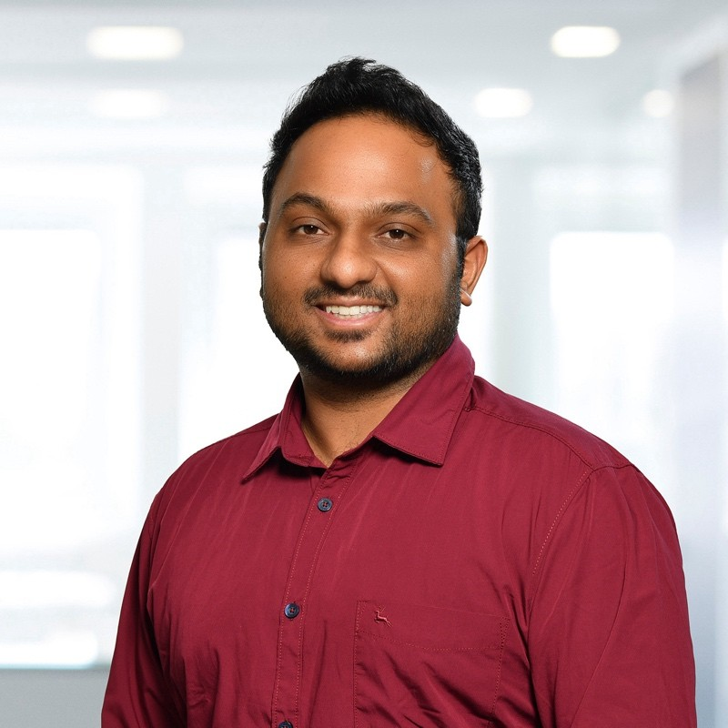
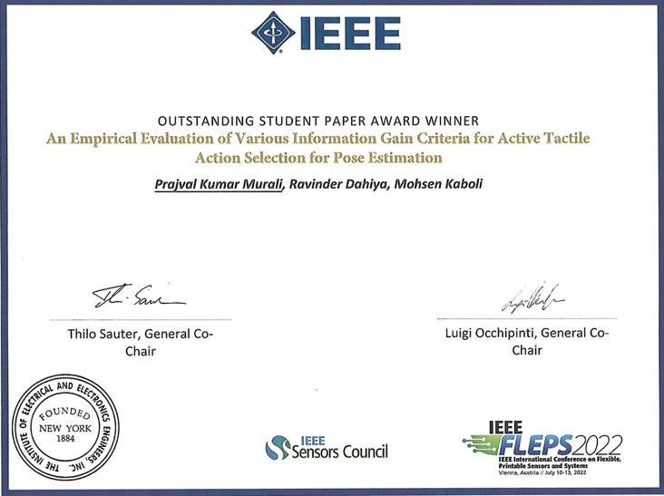
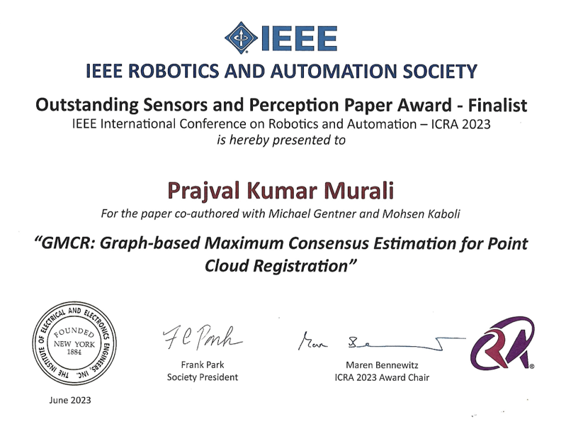
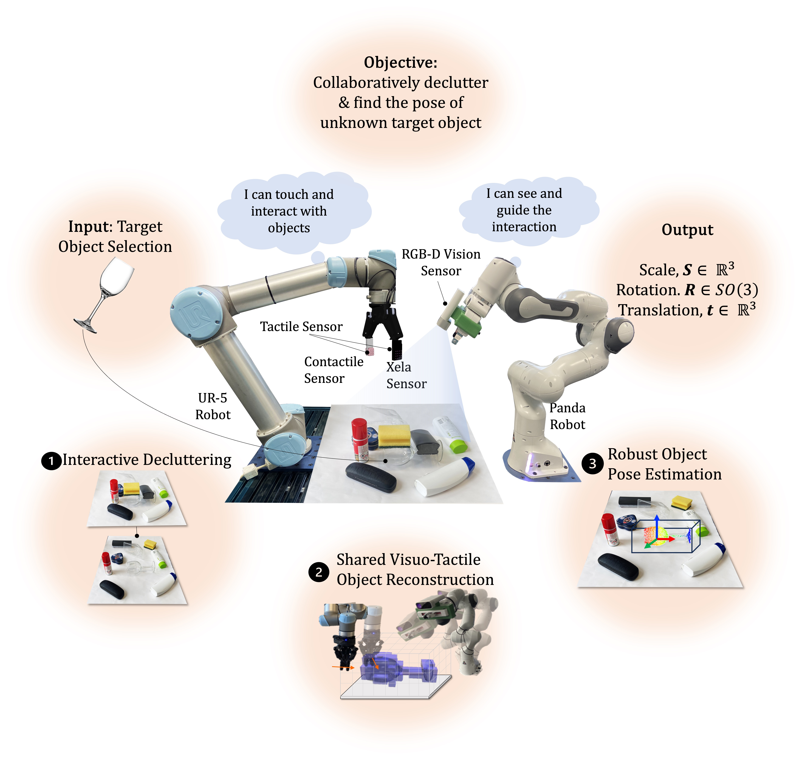
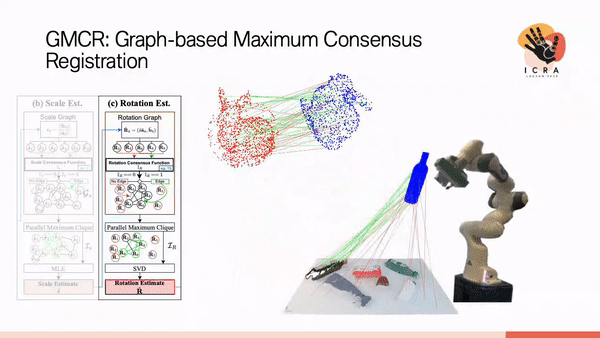
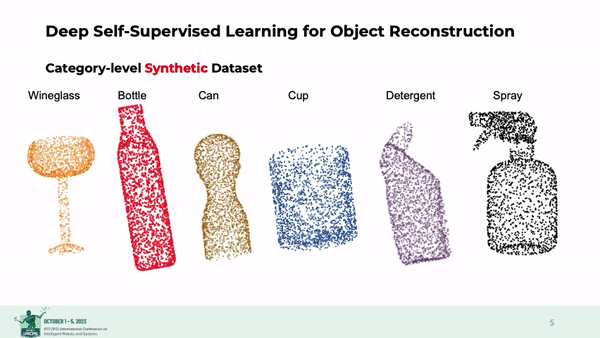
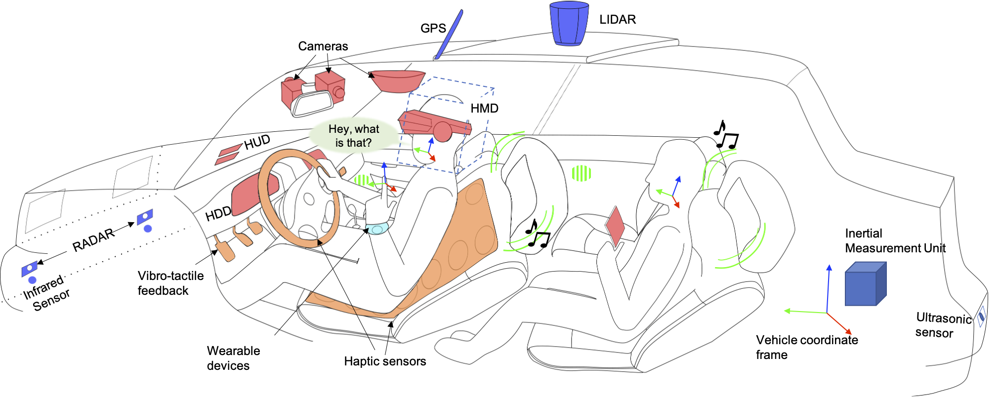
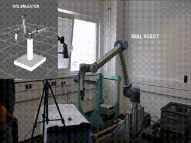
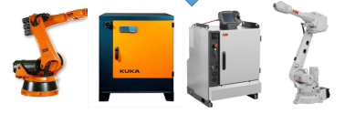
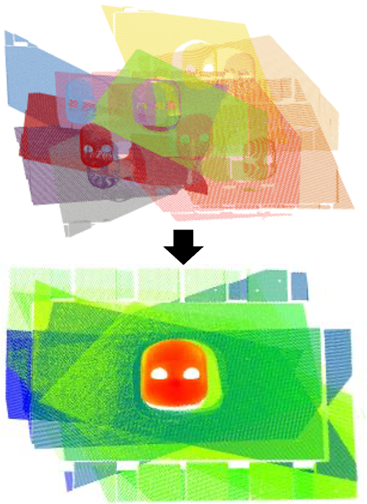

Prajval Kumar Murali, Ph.D.
I am an R&D Scientist at the Zeiss Group, specializing in AI-driven computer vision and robotic perception technologies. My main focus is developing state-of-the-art AI models for business use-cases at Zeiss.
Previously, I worked at the BMW Group on developing novel AI algorithms for multi-modal perception from various sensors such as visual cameras and tactile sensors for robotic manipulation.
Prior to joining BMW, I worked as a robotics engineer at the Italian Institute of Technology in Genova, Italy. Here, I worked in a joint lab with Danieli Automation towards robotization of a safety-critical task in the steel industry.
I hold Ph.D. and M.S. degrees in AI and Robotics from University of Glasgow, Scotland and University of Genova, Italy respectively. I also have a B.Tech degree from National Institute of Technology Trichy, India.

Awards & Recognition


Robotic Perception - Vision & Tactile Sensing



Deep Active Cross-Modal Visuo-Tactile Transfer Learning for Robotic Object Recognition

.png)
An Empirical Evaluation of Various Information Gain Criteria for Active Tactile Action Selection for Pose Estimation

GMCR: Graph-based Maximum Consensus Estimation for Point Cloud Registration
3D Object Reconstruction

Touch if it's transparent! ACTOR: Active Tactile-based Category-Level Transparent Object Reconstruction
Human-Robot Collaboration



A Flexible Software Architecture for Robotic Industrial Applications
Sensor Calibration
